Muktasim Abdul Rahman
•Life Scientist • Biochemist •Entrepreneur
•Biomedical Researcher • AI & Digital Innovation Researcher
Advancing science, empowering innovation, transforming society.
I develop research-driven solutions that bridge biomedical science, artificial intelligence, and entrepreneurship to improve healthcare, strengthen businesses, and create sustainable impact.
Featured Highlights
🎓 MSc Candidate
Currently pursuing a Master of Science in Life Sciences at King Fahd University of Petroleum and Minerals (KFUPM), Saudi Arabia.
🧬 Biomedical Research
Conducting research on antimicrobial resistance, molecular biology, nanotechnology, and innovative therapeutic strategies.
🤖 AI Innovation
Developing AI-powered platforms for healthcare, entrepreneurship, research support, and sustainable economic development.
🌍 Vision
Committed to translating scientific research into practical solutions that improve lives, strengthen businesses, and create lasting societal impact.

About Me
I am a Life Scientist and Biochemist currently pursuing a Master of Science in Life Sciences at King Fahd University of Petroleum and Minerals (KFUPM), Saudi Arabia.
My research focuses on microbiology, molecular biology, antimicrobial resistance, and nanotechnology-based therapeutic strategies. I am particularly interested in translating scientific discoveries into innovative healthcare solutions with real-world impact.
Beyond biomedical research, I am passionate about artificial intelligence, digital innovation, and entrepreneurship. I develop AI-powered solutions that support scientific research, education, healthcare, and the digital transformation of small businesses into sustainable enterprises capable of creating employment and driving economic development.
My long-term vision is to pursue doctoral research while building technologies that bridge scientific discovery, artificial intelligence, and societal impact through practical innovation.
Education
My academic journey has provided the scientific foundation that supports my research, innovation, and future doctoral aspirations.

Master of Science (MSc) in Life Sciences
King Fahd University of Petroleum and Minerals (KFUPM)
Currently pursuing advanced research in microbiology, molecular biology, nanotechnology and antimicrobial resistance, with emphasis on translational biomedical research.

Bachelor of Science (BSc) in Biochemistry
University for Development Studies (UDS), Ghana
Built a strong foundation in biochemistry, laboratory science, analytical techniques and scientific research, graduating with Second Class Upper Honors.
Research
My research integrates biomedical science, molecular biology, nanotechnology, and artificial intelligence to address pressing healthcare challenges through interdisciplinary collaboration and translational innovation.


Current Research
MSc Thesis
Evaluating the synergistic effect of silver-carbon nanotube composites and ciprofloxacin as antimicrobial agents to combat antimicrobial resistance.
Visit Academic Portfolio →Research Interests
- Antimicrobial Resistance
- Molecular Biology
- Microbiology
- Nanotechnology
- Drug Delivery Systems
- Bioinformatics
- Artificial Intelligence in Healthcare
Research Vision
I aspire to develop innovative biomedical technologies that combine molecular science, artificial intelligence, and data-driven decision support to improve healthcare delivery and contribute to global health solutions.
Innovation & Ventures
I believe research should extend beyond publications and become practical solutions that improve healthcare, entrepreneurship, education, and sustainable development.
AI Business Growth Platform
Developing an intelligent platform that helps small businesses transform into sustainable enterprises through business planning, funding guidance, strategic decision support, financial analysis, and artificial intelligence.
Opportunity Execution Hub
An AI-powered assistant designed to help students, researchers, entrepreneurs, and professionals discover, evaluate, and successfully execute opportunities including scholarships, grants, fellowships, conferences, and research collaborations.
Research & Healthcare AI
Exploring intelligent systems that assist biomedical research, scientific writing, literature review, molecular analysis, healthcare decision support, and digital laboratory transformation.
Kanz Innovation Portfolio
A growing portfolio showcasing AI concepts, digital products, innovation projects, and future ventures currently under development.
Visit Portfolio →Projects
Academic Projects
- Microbial Culture Techniques
- Molecular Biology and Genetic Analysis
- DNA Isolation and Quantification
- Advanced Instrumentation Techniques
Innovation Projects
- AI Business Growth Platform
- Opportunity Execution Hub
- Research Portfolio Website
Gallery
A visual journey through my research, academic achievements, innovation projects, professional experiences, and personal interests.
🔬 Research Journey

Nanomaterials Research
Investigating silver–carbon nanotube composites as innovative antimicrobial materials to combat antimicrobial resistance.

Experimental Setup
Conducting laboratory experiments involving material synthesis, microbiological analysis, and scientific characterization techniques.
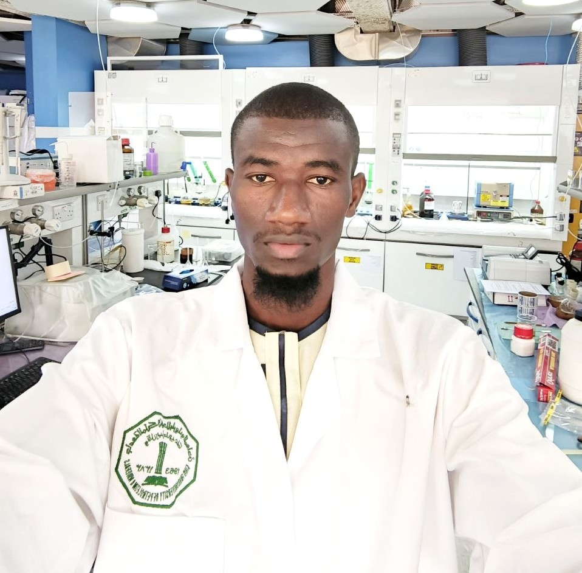
Laboratory Experience
Daily laboratory work focused on biomedical research, experimentation, data collection, and scientific problem solving.
🎤 Conferences & Academic Events
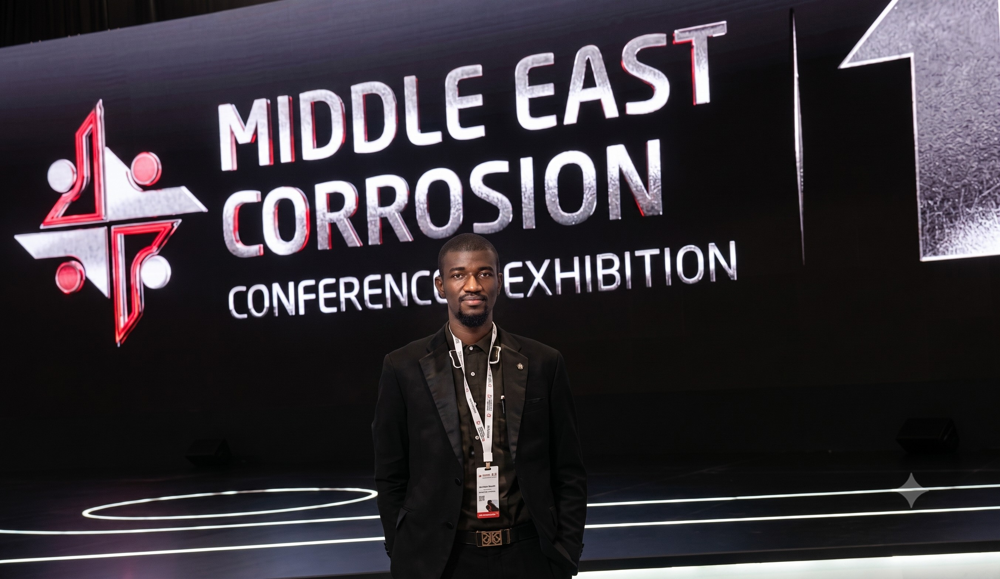
Scientific Conferences
Presenting research, exchanging ideas with fellow scientists, and learning from leading experts.
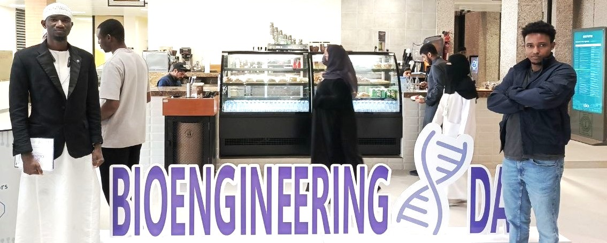
Workshops & Training
Participating in workshops that strengthen laboratory, research, and innovation skills.
🤝 Research Collaboration
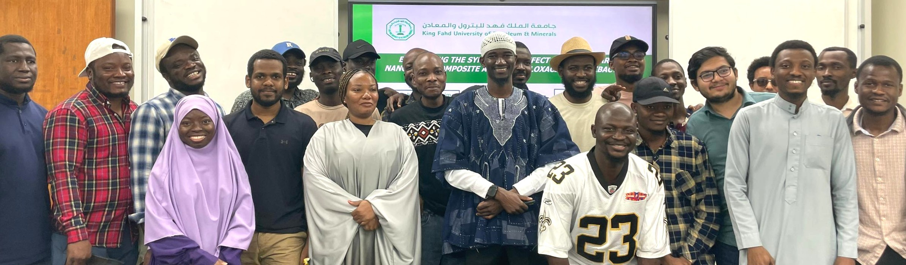
Interdisciplinary Collaboration
Working with researchers from different scientific backgrounds to solve complex biomedical challenges.
🤖 Innovation & Technology
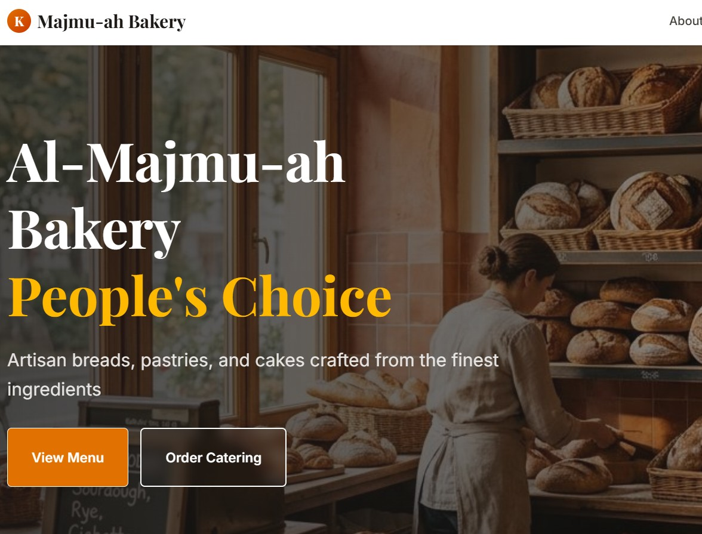
Innovation Projects
Designing AI-powered solutions for healthcare, entrepreneurship, education, and scientific research.
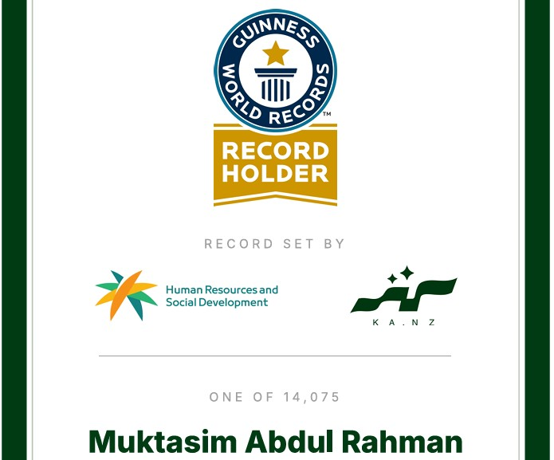
Artificial Intelligence
Exploring artificial intelligence and digital technologies to improve healthcare and accelerate research.
🎓 Academic Journey
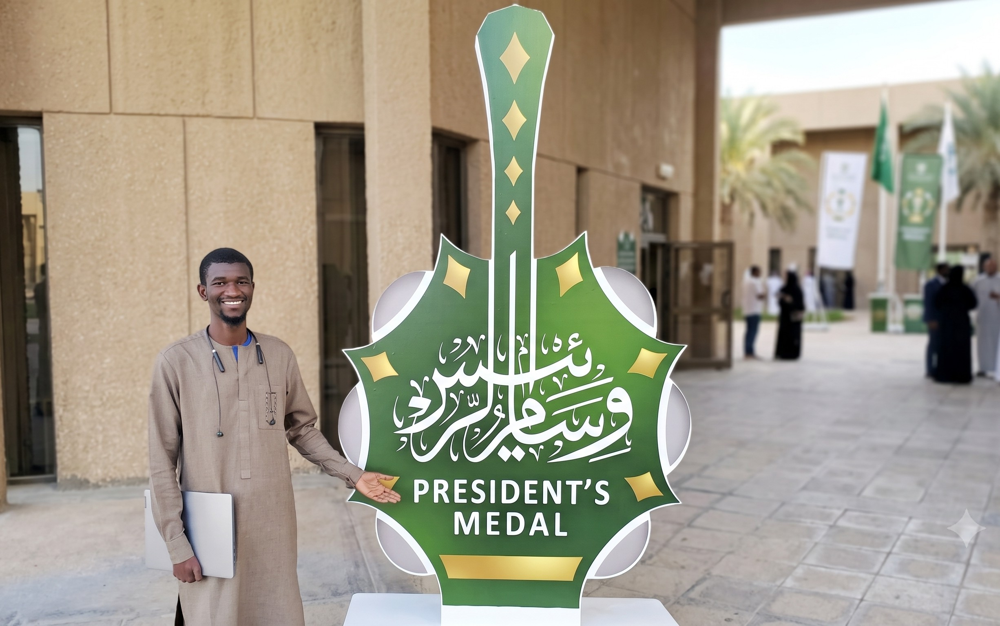
Academic Milestones
Important moments throughout my undergraduate and postgraduate academic journey.
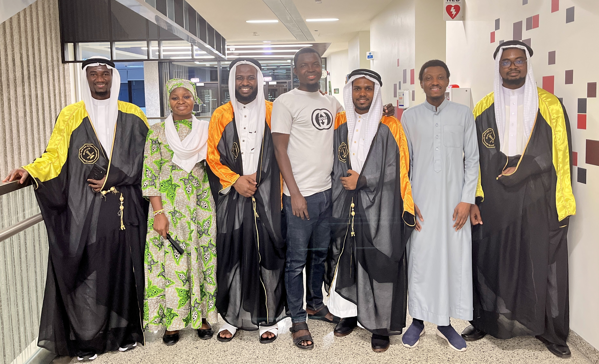
Graduation
Celebrating milestones that mark continued growth in science and lifelong learning.
🌍 Beyond Research
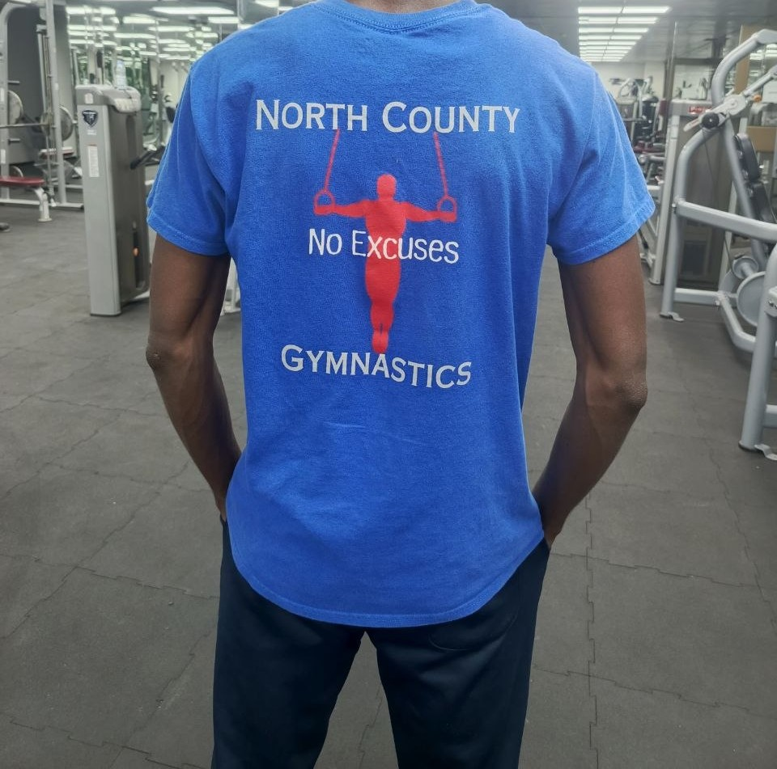
Gymnastics & Fitness
Gymnastics keeps me physically active while developing discipline, resilience, flexibility, and mental focus.
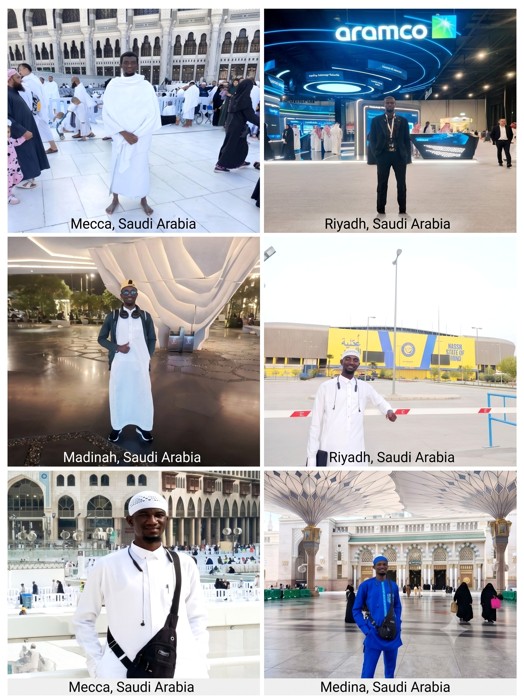
Travel & Cultural Exploration
Travelling allows me to experience diverse cultures, broaden my perspective, and appreciate global diversity.
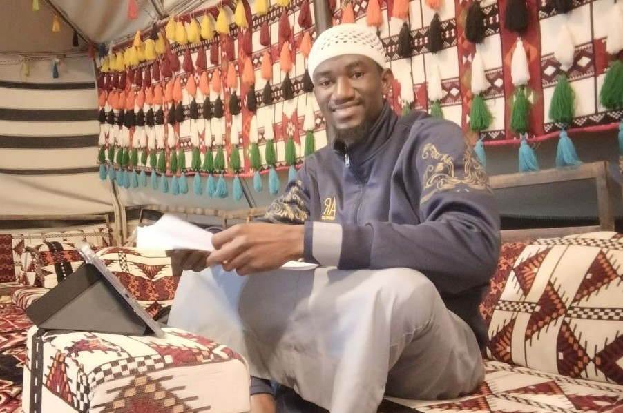
Reading
I enjoy reading books on science, innovation, leadership, technology, entrepreneurship, and personal development.
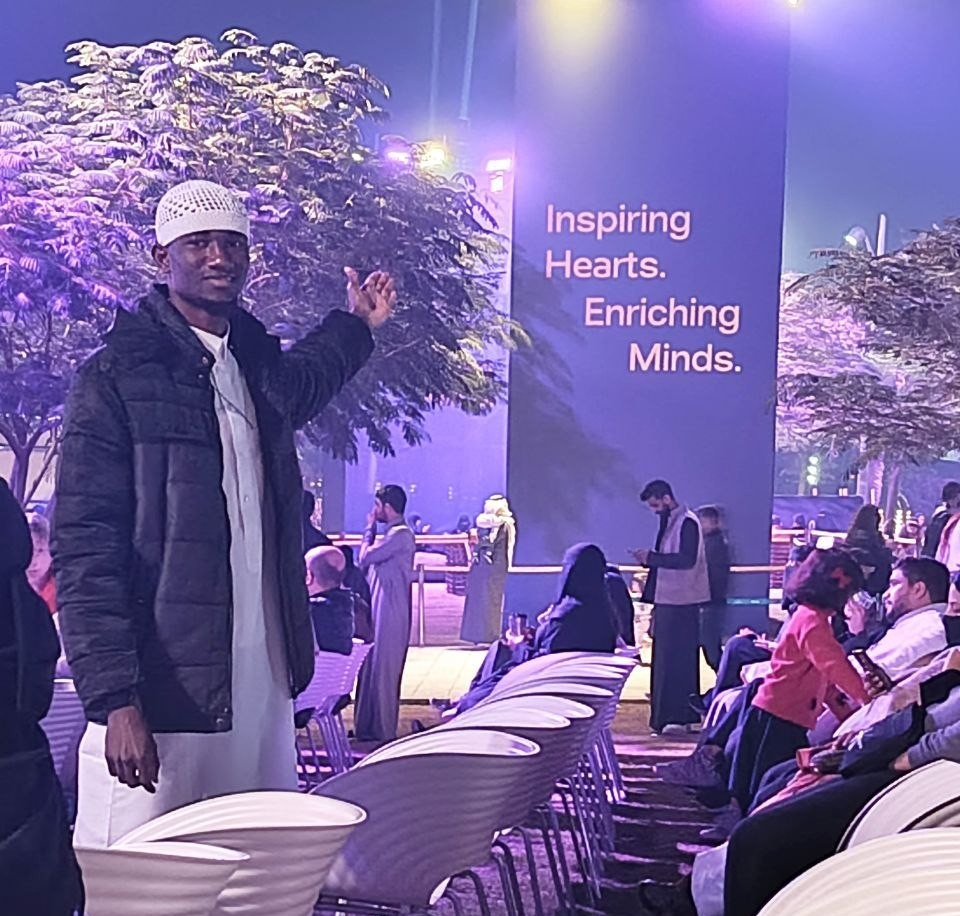
Community & Leadership
Passionate about mentoring, collaboration, and using science and innovation to create positive societal impact.
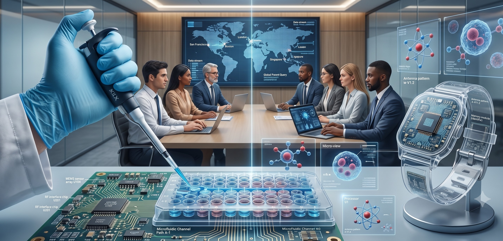
Future Vision
Working toward becoming a globally recognized biomedical researcher, innovator, and entrepreneur.
Let's Connect
I welcome opportunities for research collaboration, interdisciplinary innovation, academic partnerships, conference participation, and professional networking.
Contact Information
King Fahd University of Petroleum and Minerals (KFUPM), Saudi Arabia
Molecular Biology • Nanotechnology • Antimicrobial Resistance • Artificial Intelligence